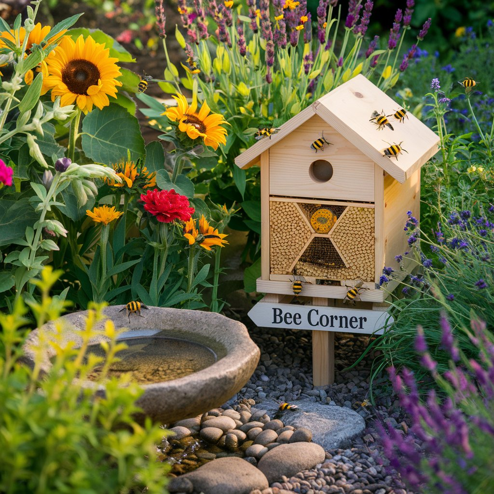
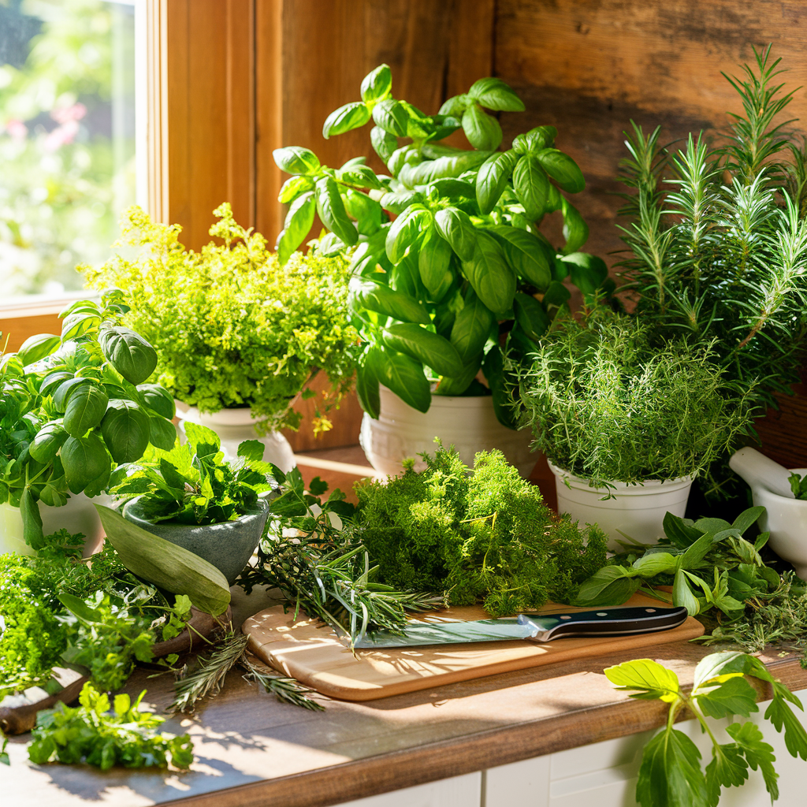
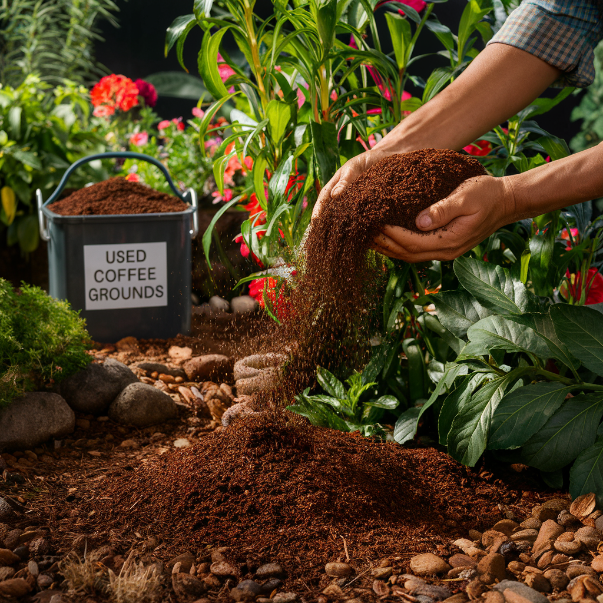

Les limaces et escargots sont les ennemis numéro un du jardinier potager. Ces gastéropodes voraces peuvent dévaster un semis de salade en une seule nuit, réduire à néant des plants de courgettes fraîchement repiqués et transformer un rang de jeunes pousses en un champ de tiges décapitées. Chaque année, des millions de jardiniers se retrouvent démunis face à ces créatures nocturnes qui semblent se multiplier indéfiniment, surtout lors des printemps humides. Pourtant, il existe de nombreuses solutions naturelles et biologiques pour protéger efficacement votre potager sans recourir aux granulés chimiques toxiques qui empoisonnent la faune, les animaux domestiques et contaminent votre sol. Ce guide complet vous présente 15 méthodes éprouvées, de la plus simple à la plus élaborée, pour vivre en paix avec — ou sans — ces gastéropodes envahissants.
Comprendre les limaces et escargots : mieux les connaître pour mieux les combattre
Avant de déclarer la guerre aux limaces et escargots, il est essentiel de comprendre leur biologie, leur comportement et leur rôle dans l'écosystème du jardin. Cette connaissance vous permettra de choisir les méthodes de lutte les plus adaptées et les plus efficaces.
Cycle de vie et reproduction
Les limaces et escargots sont des mollusques gastéropodes. La plupart des espèces sont hermaphrodites : chaque individu possède à la fois des organes mâles et femelles, et après l'accouplement, les deux partenaires pondent des oeufs. Une seule limace peut pondre entre 100 et 500 oeufs par an, répartis en plusieurs pontes de 20 à 50 oeufs déposés dans des petits trous du sol, sous des pierres, des planches ou dans les anfractuosités humides. Les oeufs, petits et translucides (2 à 4 mm de diamètre), éclosent après 2 à 4 semaines selon la température. Les jeunes limaces sont déjà voraces dès leur naissance et atteignent leur maturité sexuelle en 3 à 6 mois. Cette capacité de reproduction explosive explique pourquoi les populations de limaces peuvent littéralement exploser après une série de jours pluvieux au printemps.
Comportement et mode de vie
Les limaces et escargots sont essentiellement nocturnes. Ils se cachent pendant la journée dans des endroits frais et humides — sous les pierres, les planches, les pots retournés, dans les fissures du sol, sous le paillage épais — et sortent à la tombée de la nuit pour se nourrir. Leur activité est maximale par temps doux et humide, idéalement entre 15 et 20 °C avec une hygrométrie supérieure à 80 %. Ils se déplacent en glissant sur un film de mucus qu'ils sécrètent en permanence, d'où les traces argentées caractéristiques visibles le matin sur les feuilles et le sol. Les limaces peuvent parcourir jusqu'à 50 mètres en une seule nuit, tandis que les escargots, plus lents, couvrent rarement plus de 10 mètres.
Leur rôle dans l'écosystème
Il serait injuste de ne voir dans les limaces et escargots que des nuisibles. Ces gastéropodes jouent un rôle important dans l'écosystème du jardin. Ils participent activement à la décomposition de la matière organique morte — feuilles mortes, bois en décomposition, fruits tombés — et contribuent ainsi au recyclage des nutriments et à la fertilité du sol. Leurs déjections enrichissent la terre en éléments nutritifs facilement assimilables par les plantes. Ils constituent une source de nourriture essentielle pour de nombreux prédateurs : hérissons, crapauds, orvets, carabes, staphylins, grives, merles, canards coureurs indiens. Un jardin sans limaces serait un jardin appauvri en biodiversité. L'objectif n'est donc pas d'éradiquer toutes les limaces — mission impossible et écologiquement néfaste — mais de réguler leur population et de protéger les plantes les plus vulnérables.
Le saviez-vous ?
La grosse limace orange (Arion rufus), souvent considérée comme la pire ennemie du jardinier, se nourrit en réalité principalement de matière organique en décomposition et cause peu de dégâts aux cultures vivantes. Ce sont les petites limaces grises (Deroceras reticulatum), beaucoup plus discrètes, qui sont responsables de la majorité des dommages au potager. Elles vivent dans les 5 premiers centimètres du sol et attaquent les racines et les jeunes pousses par en dessous, souvent sans être repérées.
Les 15 solutions naturelles contre les limaces et escargots
Solution 1 : Les pièges à bière
C'est probablement la méthode la plus connue et la plus populaire. Les limaces sont irrésistiblement attirées par l'odeur de la levure contenue dans la bière. Enterrez un récipient (pot de yaourt, boîte de conserve, soucoupe) de sorte que le bord affleure la surface du sol, et remplissez-le de bière bon marché. Les limaces, attirées par l'odeur, tombent dans le liquide et se noient.
Efficacité : bonne pour les captures ponctuelles, mais attention : la bière attire les limaces dans un rayon de plusieurs mètres, ce qui peut en amener davantage dans votre potager qu'il n'y en avait initialement. Placez les pièges en périphérie du potager plutôt qu'au centre des cultures. Videz et renouvelez la bière tous les 2 à 3 jours. La bière éventée ou diluée par la pluie perd rapidement son pouvoir attractif. Pour une alternative maison, mélangez de l'eau tiède avec de la levure de boulanger et un peu de sucre : l'effet est identique.
Solution 2 : Les planches-pièges
Disposez des planches en bois, des ardoises, des tuiles retournées ou des demi-pamplemousses évidés dans votre potager. Les limaces et escargots s'y réfugieront pendant la journée pour se protéger du soleil et de la chaleur. Chaque matin, retournez ces abris et récoltez les gastéropodes qui s'y cachent. Éloignez-les du jardin (à plus de 100 mètres, sinon ils reviennent), donnez-les aux poules, ou écrasez-les si vous n'avez pas d'autre option.
Efficacité : excellente comme méthode de régulation quotidienne. Simple, gratuite et très efficace sur la durée. C'est l'une des méthodes préférées des maraîchers biologiques professionnels. Placez les planches sur sol humide, à proximité des cultures les plus sensibles.

Solution 3 : Les barrières de coquilles d'oeufs
Écrasez grossièrement des coquilles d'oeufs et disposez-les en anneau autour de vos plants les plus précieux. Les bords tranchants des coquilles sont censés blesser le pied mou des limaces et les dissuader de franchir la barrière. Renouvelez après chaque pluie, car les coquilles finissent par s'enfoncer dans le sol et perdre leur efficacité.
Efficacité : modérée et controversée. De nombreux jardiniers rapportent de bons résultats, mais des tests en conditions contrôlées montrent que les limaces les plus déterminées franchissent les coquilles sans difficulté, surtout par temps humide lorsque les bords sont ramollis par l'eau. Les coquilles d'oeufs restent néanmoins un excellent amendement calcaire pour le sol. Considérez-les comme un complément à d'autres méthodes plutôt qu'une solution unique.
Solution 4 : Les barrières de cendres de bois
Épandez un cordon large (au moins 5 cm) de cendres de bois non traité autour de vos planches de culture ou de vos plants individuels. Les cendres absorbent le mucus des limaces, les déshydratent et les dissuadent de passer. La cendre de bois a l'avantage supplémentaire d'enrichir le sol en potasse et en calcium.
Efficacité : bonne par temps sec, mais la cendre perd totalement son pouvoir répulsif dès qu'elle est mouillée par la pluie ou l'arrosage. Il faut la renouveler très fréquemment, ce qui représente un travail considérable. À utiliser en complément d'autres méthodes, surtout pendant les périodes sèches où la pression des limaces est déjà naturellement plus faible.
Solution 5 : Les barrières de cuivre
Le cuivre provoque une réaction électrochimique au contact du mucus des limaces, créant une sorte de petite décharge électrique désagréable qui les dissuade de franchir la barrière. Installez des bandes de cuivre adhésives (disponibles en jardinerie) autour des pots, des bacs surélevés ou des pieds de tables de culture. Pour les potagers en pleine terre, des rubans de cuivre peuvent être fixés sur des planches de bordure.
Efficacité : très bonne, c'est l'une des barrières les plus fiables. Le cuivre ne perd pas son efficacité avec la pluie et dure des années. Le principal inconvénient est le coût : les bandes de cuivre sont relativement onéreuses. Vérifiez régulièrement que les bandes ne sont pas recouvertes de terre ou de feuilles qui permettraient aux limaces de les enjamber. Nettoyez-les de temps en temps au vinaigre pour éliminer l'oxydation verte (vert-de-gris) qui réduit leur efficacité.
Solution 6 : Les prédateurs naturels - le hérisson
Le hérisson est le meilleur allié du jardinier contre les limaces. Un seul hérisson peut consommer jusqu'à 200 grammes d'insectes et de gastéropodes par nuit. Pour attirer les hérissons dans votre jardin, créez des habitats favorables : laissez un coin de jardin en friche, empilez des tas de bois et de feuilles mortes dans un coin tranquille, aménagez des passages dans les clôtures (13 cm x 13 cm suffisent) pour qu'ils puissent circuler entre les jardins. Ne ramassez pas toutes les feuilles mortes en automne. Bannissez absolument les granulés anti-limaces chimiques (métaldéhyde) qui empoisonnent mortellement les hérissons.
Installez un petit abri à hérisson dans un endroit calme et ombragé. Vous pouvez leur proposer une coupelle d'eau fraîche, surtout en été, mais ne leur donnez jamais de lait (toxique pour eux) ni de pain.
Solution 7 : Les prédateurs naturels - les carabes et staphylins
Les carabes sont de gros coléoptères noirs ou irisés qui chassent activement les limaces, les escargots et leurs oeufs. Le carabe doré (Carabus auratus) est particulièrement efficace. Les staphylins (ou « diables ») sont de petits coléoptères allongés et rapides, grands consommateurs d'oeufs de limaces dans le sol. Pour favoriser ces prédateurs, conservez des zones de refuge dans votre jardin : bordures herbeuses, tas de pierres, bandes enherbées entre les planches de culture, paillage permanent. Évitez le travail du sol trop fréquent qui détruit leurs habitats et leurs larves.

Solution 8 : Les prédateurs naturels - crapauds et orvets
Les crapauds sont d'excellents chasseurs de limaces. Un seul crapaud peut manger jusqu'à 10 000 insectes et gastéropodes par an. Aménagez un petit point d'eau (même une simple soucoupe enterrée) pour les attirer, et offrez-leur des abris frais et humides : pierres plates empilées avec des espaces, pots retournés avec une entrée, tas de bûches. Les orvets, ces lézards sans pattes souvent confondus avec des serpents, sont également de grands consommateurs de limaces. Ils vivent sous les pierres plates, les plaques de tôle chauffées par le soleil et dans les tas de compost. Protégez-les : ils sont totalement inoffensifs pour l'homme et extrêmement bénéfiques au jardin.
Solution 9 : Les plantes répulsives
Certaines plantes dégagent des odeurs ou contiennent des substances que les limaces évitent naturellement. Intégrer ces plantes dans votre potager crée une protection naturelle complémentaire.
- Fougères : en paillage au pied des cultures sensibles, les fougères repoussent les limaces grâce à leurs tanins et leur texture rugueuse.
- Consoude : les feuilles de consoude, épandues en paillage, sont un excellent répulsif. En plus, elles constituent un engrais vert riche en potasse.
- Moutarde et capucine : ces plantes attirent les limaces vers elles, servant de « plantes sacrificielles » qui détournent les ravageurs des cultures principales. Plantez-les en bordure du potager.
- Ail, oignon, ciboulette : les Alliacées dégagent des composés soufrés que les limaces détestent. Intercalez-les entre vos rangs de salades et de choux.
- Thym, romarin, lavande : les plantes aromatiques méditerranéennes, très parfumées et résistantes à la sécheresse, sont naturellement boudées par les limaces.
- Bégonias et géraniums : parmi les fleurs, ces espèces sont rarement attaquées et constituent des bordures protectrices pour le potager.
Solution 10 : Les nématodes anti-limaces
Les nématodes Phasmarhabditis hermaphrodita sont des vers microscopiques qui parasitent spécifiquement les limaces. Ils pénètrent dans le corps de la limace par son pore respiratoire et libèrent une bactérie qui provoque une infection mortelle en 5 à 10 jours. Les nématodes se multiplient à l'intérieur de la limace morte et retournent dans le sol pour infecter de nouvelles proies.
Application : les nématodes sont vendus sous forme de poudre à diluer dans l'eau d'arrosage. Appliquez-les sur un sol humide et chaud (température du sol supérieure à 5 °C, idéalement entre 10 et 20 °C), de préférence le soir ou par temps couvert pour éviter que les UV ne les tuent. Arrosez la zone traitée pendant les jours suivants pour maintenir l'humidité nécessaire à leur déplacement dans le sol. L'effet protecteur dure environ 6 semaines.
Efficacité : excellente contre les petites limaces grises souterraines, modérée contre les grosses limaces de surface. C'est l'une des méthodes les plus efficaces car elle agit sur les limaces que vous ne voyez jamais — celles qui vivent dans le sol et s'attaquent aux racines et aux jeunes semis par en dessous. Traitement à renouveler au printemps et en automne pour une protection optimale.
Quand appliquer les nématodes ?
La période idéale pour la première application de nématodes est mars-avril, lorsque le sol se réchauffe et que les jeunes limaces commencent à être actives. Une seconde application en septembre permet de cibler la nouvelle génération avant l'hiver. Conservez les nématodes au réfrigérateur avant utilisation et appliquez-les rapidement après ouverture du sachet.
Solution 11 : Le ferramol (phosphate de fer)
Le ferramol, ou phosphate de fer (phosphate ferrique), est un anti-limaces biologique autorisé en agriculture biologique. Lorsqu'une limace ingère un granulé de ferramol, le phosphate de fer provoque un arrêt immédiat de l'alimentation. La limace cesse de manger, se retire dans sa cachette et meurt en quelques jours par déshydratation, sans laisser de trace de mucus ni de cadavre visible.
Application : épandez les granulés de manière uniforme sur le sol, à raison de 5 grammes par mètre carré (environ 15 à 20 granulés par m2). Inutile de surdoser : une répartition homogène est plus efficace qu'un amas concentré. Renouvelez l'application après une forte pluie ou tous les 10 à 15 jours en période de forte activité des limaces.
Avantages : le ferramol est totalement inoffensif pour les hérissons, les oiseaux, les animaux domestiques, les vers de terre et les insectes auxiliaires. Le phosphate de fer non consommé se décompose naturellement dans le sol en fer et en phosphate, deux éléments nutritifs bénéfiques pour les plantes. C'est la seule méthode de granulés que nous recommandons. N'utilisez jamais de granulés à base de métaldéhyde (granulés bleus classiques), extrêmement toxiques pour la faune, les animaux domestiques et les enfants.
Solution 12 : Le paillage intelligent
Le choix du paillage a un impact direct sur la pression des limaces. Certains paillages les favorisent, d'autres les repoussent.
- Paillages défavorables aux limaces : le miscanthus broyé (tiges sèches et piquantes), le lin (texture désagréable), les aiguilles de pin (acidité), la paillette de chanvre (absorbe le mucus), les coques de cacao (texture et odeur répulsives), le BRF bien sec.
- Paillages qui favorisent les limaces : la paille épaisse et humide, les tontes de gazon fraîches en couche épaisse, le foin humide. Ces paillages créent un environnement frais et humide idéal pour les limaces.
Si vous utilisez un paillage épais, éloignez-le de quelques centimètres de la base des plants les plus sensibles (salades, jeunes semis) pour ne pas créer un pont humide direct entre la cachette des limaces et leur nourriture.
Solution 13 : La collecte manuelle nocturne
C'est la méthode la plus directe et, à court terme, la plus efficace. Sortez dans votre jardin une à deux heures après la tombée de la nuit, muni d'une lampe frontale et d'un seau. Vous serez surpris par le nombre de limaces et d'escargots en activité que vous découvrirez. Ramassez-les méthodiquement et déposez-les dans le seau. Éloignez-les du jardin à plus de 100 mètres, ou donnez-les aux poules si vous en avez. Après quelques soirées de collecte intensive, la population locale sera significativement réduite.
Conseil pratique : concentrez vos rondes nocturnes sur les périodes de forte activité — après une pluie, par temps doux et couvert. En une seule soirée favorable, vous pouvez capturer plusieurs dizaines de limaces et d'escargots. Arrosez légèrement le jardin en fin d'après-midi pour les inciter à sortir plus tôt le soir.

Solution 14 : Les canards coureurs indiens
Si vous disposez d'un jardin suffisamment grand (minimum 200 m2), les canards coureurs indiens sont une solution radicale et charmante. Cette race de canards à la silhouette verticale caractéristique (ils se tiennent presque droits, comme des quilles de bowling) est spécialisée dans la chasse aux limaces et escargots. Un couple de coureurs indiens peut débarrasser un jardin moyen de sa population de limaces en quelques semaines. Ils consomment également des insectes nuisibles tout en épargnant la plupart des plantes du potager — à condition de ne pas les laisser accéder aux semis fragiles et aux jeunes salades.
Les canards coureurs indiens nécessitent un enclos sécurisé pour la nuit (contre les renards), un point d'eau pour se baigner (une bassine suffit), et au moins deux individus car ils vivent en groupe. Ils sont rustiques, faciles à entretenir et pondent des oeufs délicieux. C'est sans doute la méthode anti-limaces la plus sympathique et la plus efficace sur le long terme.
Solution 15 : L'arrosage stratégique
Modifier vos habitudes d'arrosage peut réduire considérablement la pression des limaces. Les limaces sont actives la nuit et ont besoin d'humidité pour se déplacer. Un sol sec en surface les nuit considérablement.
- Arrosez le matin, jamais le soir : un arrosage matinal permet au sol de surface de sécher pendant la journée. Un arrosage le soir maintient une humidité de surface pendant la nuit, quand les limaces sont actives.
- Arrosez au pied, pas en aspersion : le goutte-à-goutte humidifie uniquement la zone racinaire, laissant la surface sèche entre les plants.
- Arrosez copieusement mais moins souvent : un arrosage profond et espacé favorise un enracinement profond et laisse la surface sèche plus longtemps qu'un arrosage superficiel quotidien.
Protéger les cultures les plus vulnérables
Toutes les plantes ne sont pas également menacées par les limaces. Certaines sont des cibles prioritaires qui méritent une protection renforcée, tandis que d'autres sont naturellement délaissées.
Les plantes les plus attaquées
Les limaces ont des préférences alimentaires très marquées. Leurs cibles favorites, par ordre de vulnérabilité, sont les suivantes : les hostas (véritables aimants à limaces), les salades (laitues, feuilles de chêne, batavias), les jeunes semis de toutes espèces dans les deux premières semaines après germination, les choux (tous types), les fraisiers (surtout les fruits), les haricots et pois en phase de germination, les courgettes et courges jeunes, les dahlias, les delphiniums et les lupins.
Les plantes naturellement résistantes
À l'inverse, de nombreuses plantes sont rarement ou jamais attaquées par les limaces : les plantes aromatiques (thym, romarin, sauge, lavande, menthe), les Alliacées (ail, oignon, échalote, poireau, ciboulette), les tomates (sauf les très jeunes plants), les pommes de terre, les fougères, les géraniums, les graminées ornementales, et la plupart des plantes à feuilles coriaces, velues ou aromatiques. Intégrer davantage de ces plantes résistantes dans votre jardin réduit naturellement les dégâts globaux.
Techniques de protection individuelle
Pour les plants les plus précieux ou les plus vulnérables, des protections individuelles peuvent faire la différence.
- Les cloches de protection : des bouteilles en plastique coupées en deux, posées autour des jeunes plants, créent une barrière physique infranchissable. Retirez le bouchon pour la ventilation. Cette protection est cruciale pendant les 2 à 3 premières semaines après le repiquage, période de plus grande vulnérabilité.
- Les collerettes anti-limaces : des disques de carton, de plastique ou de cuivre placés autour de la base du plant. Le bord incurvé vers l'extérieur empêche les limaces de grimper.
- Le voile de forçage : un voile horticole posé sur les semis récents empêche physiquement les limaces d'accéder aux jeunes pousses tout en laissant passer la lumière, l'air et l'eau.
- Les pots surélevés : les cultures en pots et en bacs surélevés, surtout si leurs pieds sont équipés de bandes de cuivre, sont beaucoup moins accessibles aux limaces que les cultures en pleine terre.
"Un jardin sans limaces est un jardin mort. L'objectif du jardinier sage n'est pas de les exterminer mais de créer un équilibre où chaque être vivant trouve sa place — y compris les gastéropodes, à condition qu'ils restent à la leur."
Stratégie globale : combiner les méthodes
Aucune méthode isolée ne suffit à résoudre durablement le problème des limaces. La clé du succès réside dans la combinaison de plusieurs approches complémentaires, ce que les spécialistes appellent la lutte intégrée. Voici une stratégie globale en quatre niveaux.
Niveau 1 : Favoriser la biodiversité (long terme)
Créez un jardin accueillant pour les prédateurs naturels des limaces. Installez un abri à hérissons, conservez des zones sauvages, maintenez des habitats pour les carabes et les staphylins, aménagez un petit point d'eau pour les crapauds. C'est la solution la plus durable et la plus efficace sur le long terme. Un jardin riche en biodiversité régule naturellement les populations de ravageurs sans intervention humaine.
Niveau 2 : Limiter les conditions favorables (prévention)
Adaptez vos pratiques culturales pour rendre votre potager moins hospitalier pour les limaces : arrosage matinal, paillage approprié, suppression des abris inutiles à proximité immédiate des cultures (tas de bois, planches abandonnées), travail superficiel du sol en fin d'hiver pour exposer les oeufs de limaces au gel et aux prédateurs.
Niveau 3 : Protéger les cultures sensibles (barrières)
Mettez en place des protections physiques autour des plantes les plus vulnérables : bandes de cuivre sur les bacs et les pots, cloches de protection sur les jeunes semis, choix de paillages défavorables aux limaces. Utilisez des plantes compagnes répulsives et des plantes sacrificielles pour détourner l'attention des gastéropodes.
Niveau 4 : Intervention directe (curatif)
En cas de forte pression, combinez les méthodes de capture (pièges à bière, planches-pièges, collecte nocturne) avec les traitements biologiques (nématodes au printemps et en automne, ferramol pendant la saison active). Concentrez vos efforts sur les périodes de pics d'activité : après les pluies, au printemps et en automne.
Les erreurs à éviter absolument
Dans la lutte contre les limaces, certaines pratiques courantes sont non seulement inefficaces mais potentiellement nocives pour votre jardin et son écosystème.
- Les granulés au métaldéhyde : ces granulés bleus classiques sont extrêmement toxiques pour les hérissons, les oiseaux, les animaux domestiques et même les enfants. Ils empoisonnent les prédateurs naturels des limaces, aggravant le problème à moyen terme. De plus, le métaldéhyde contamine les sols et les nappes phréatiques. Ils sont d'ailleurs progressivement interdits dans de nombreux pays européens.
- Le sel : épandre du sel sur les limaces les tue effectivement par déshydratation, mais le sel est un poison mortel pour la vie du sol. Il détruit les micro-organismes, les vers de terre et rend la terre stérile. Quelques grammes de sel suffisent à rendre un mètre carré de sol improductif pendant des années.
- Les pesticides chimiques : tout traitement chimique non ciblé détruit la faune auxiliaire (carabes, staphylins, vers de terre) qui est votre meilleure alliée dans la régulation des limaces. Supprimer ces prédateurs provoque un effet rebond : les populations de limaces explosent dès que le produit cesse d'agir.
- Supprimer tous les abris : un jardin parfaitement « propre » sans le moindre tas de bois, de pierres ou de feuilles est un désert biologique. En supprimant les abris, vous chassez simultanément les prédateurs des limaces. Gardez des zones refuges éloignées du potager pour les auxiliaires.
- L'excès de bière : multiplier les pièges à bière au centre du potager attire les limaces de tout le voisinage. Résultat paradoxal : vous capturez beaucoup de limaces, mais vous en attirez encore plus. Limitez les pièges à la périphérie et n'en abusez pas.
Calendrier anti-limaces saison par saison
Fin d'hiver (février-mars)
Griffez légèrement la surface du sol de vos futures planches de culture pour exposer les oeufs de limaces au froid, au vent et aux prédateurs (oiseaux, carabes). Installez les abris à hérissons et vérifiez les points d'eau pour les crapauds. Commandez vos nématodes pour une application dès que le sol atteindra 5 °C.
Printemps (avril-mai)
C'est la période la plus critique. Appliquez les nématodes dès que le sol est suffisamment chaud. Mettez en place les protections individuelles (cloches, bandes de cuivre) avant les repiquages. Commencez les rondes nocturnes de collecte manuelle. Disposez les planches-pièges. Épandez du ferramol autour des semis et des jeunes plants. Surveillez particulièrement les semis directs de salades, de haricots et de courgettes.
Été (juin-août)
La pression diminue naturellement par temps chaud et sec, mais remontera immédiatement après chaque orage ou période pluvieuse. Maintenez la vigilance. Arrosez le matin pour laisser la surface sécher. Les jeunes plants sont désormais plus robustes et résistants, mais les salades restent vulnérables toute la saison. Continuez le ramassage sous les planches-pièges.
Automne (septembre-novembre)
L'activité des limaces reprend avec le retour de l'humidité et de la fraîcheur. Deuxième application de nématodes en septembre. Protégez les semis de mâche et d'épinards d'automne. Nettoyez les débris végétaux du potager pour limiter les cachettes hivernales. Laissez en revanche les tas de feuilles et de bois dans les zones éloignées du potager pour les hérissons qui préparent leur hibernation.
La lutte contre les limaces et les escargots est un marathon, pas un sprint. Il n'existe pas de solution miracle qui éradique le problème en une seule application. La clé du succès réside dans la patience, la régularité et la diversité des approches. En combinant la création d'un écosystème riche en prédateurs naturels, des pratiques culturales adaptées, des barrières physiques intelligentes et des traitements biologiques ciblés, vous parviendrez à un équilibre durable où vos cultures prospèrent sans être dévastées. Et rappelez-vous : chaque limace qui échappe à vos pièges nourrit peut-être un hérisson, un crapaud ou un carabe qui, à son tour, en capturera dix autres. La nature est votre plus puissante alliée ; faites-lui confiance et travaillez avec elle, jamais contre elle.